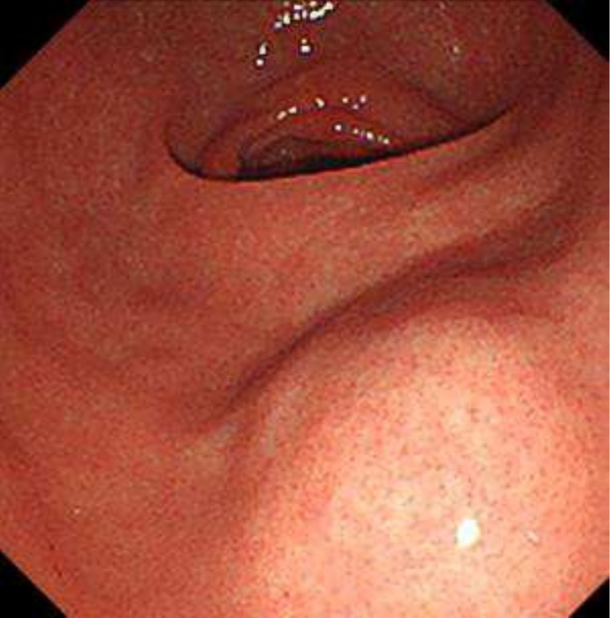

Lesão gástrica? Endoscopia, e em seguida a biópsia.
No GIST esse reflexo está errado — e a banca sabe disso. O diagnóstico nasce do aspecto macroscópico, não da pinça.
O tumor que você não deve biopsiar
Comece pelo que você já domina. No câncer gástrico clássico, o adenocarcinoma, o caminho é uma sequência conhecida: endoscopia, identificação da lesão suspeita, biópsia. A biópsia confirma o adenocarcinoma porque o tumor está na mucosa — bem ao alcance da pinça.
No GIST, o roteiro muda. O diagnóstico ainda passa pela endoscopia, mas não pela biópsia — e sim pela análise do aspecto macroscópico da lesão. A princípio, no GIST não se faz biópsia. E há uma razão estrutural elegante para isso: o GIST se forma de maneira intramural (submucosa). Ele cresce dentro da parede, sob a mucosa íntegra, abaulando-a por baixo. A pinça, que morde a superfície, frequentemente pega só mucosa normal por cima — e erra o tumor que está mais fundo.

É por isso que o aspecto macroscópico vale tanto. O GIST tem uma assinatura visual: lesão mais arredondada e frequentemente mais brilhante, recoberta por mucosa lisa e íntegra — o clássico abaulamento submucoso. Esse padrão, somado ao contexto, já direciona o diagnóstico sem a pinça. Mas atenção ao limite do que o olho enxerga: o que a endoscopia mostra não reflete a real invasão intramural. Ela dá ideia da extensão superficial, mas não da profundidade com que o tumor invade a parede — e essa profundidade é o que mais importa para o estadiamento.
Toque numa estrutura do esquema para ver a leitura clínica.
Então quando se biopsia? Apenas em duas situações: lesão irressecável ou doença metastática — cenários mais raros. Nesses casos, a biópsia tem propósito específico: confirmar o GIST para então indicar terapia sistêmica — seja neoadjuvância para reduzir a lesão, seja tratamento da doença avançada. Fora disso, a regra permanece: olha-se, não se morde.
Quando a biópsia é indicada (lesão irressecável ou metastática), a via de escolha é a punção pela própria ecoendoscopia (EUS-FNA/FNB) — a mesma ultrassonografia endoscópica que mede o T faz a punção, evitando a via percutânea e o risco de ruptura do tumor friável.
"Como se confirma o GIST?" — a resposta-armadilha é "biópsia". A resposta certa é aspecto macroscópico à endoscopia; biópsia só se irressecável ou metastático.
Adenocarcinoma
Lesão na mucosa. A biópsia confirma — a pinça alcança o tumor na superfície.
GIST
Lesão submucosa. Biópsia de rotina não — o tumor está fundo, sob mucosa íntegra.
Revisão ativa
- Por que a pinça da endoscopia tende a "errar" o GIST?
- O que muda no objetivo da biópsia quando a lesão é irressecável ou metastática?
- Como você defenderia, para um colega, a frase "no GIST se olha, não se morde"?
GIST = diagnóstico pelo aspecto macro endoscópico (arredondado/brilhante, submucoso); biópsia só se irressecável ou metastático.
Quiz — fixação
-
Em um GIST gástrico ressecável típico, qual a conduta diagnóstica de regra?
Gabarito: B. O GIST é submucoso; a biópsia de rotina não se faz — vale o aspecto macro.
Por que cair na A: é o reflexo do adenocarcinoma aplicado ao tumor errado.
-
A endoscopia revela com precisão a profundidade de invasão intramural do GIST.
Falso. Ela mostra o abaulamento superficial; a profundidade escapa — por isso se complementa com USE/TC.
Atenção: a endoscopia é ótima para ver a superfície, péssima para medir o quão fundo o tumor invade.
-
A biópsia no GIST é indicada em qual cenário?
Gabarito: C. Só nas duas situações em que a confirmação muda a conduta para terapia sistêmica.
Por que cair na A: generalizar a biópsia ignora que o GIST ressecável dispensa a pinça.